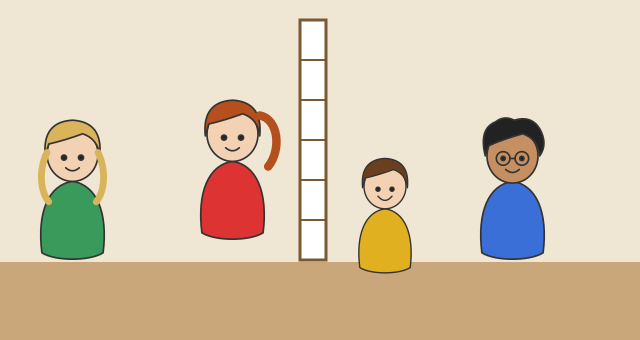
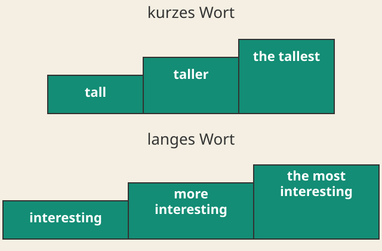

Die Treppe: Adjektive steigern
Mit einem KI-Tutor lernen
Ein KI-Tutor erklärt dir diese Seite und hilft dir bei den Aufgaben. Wähl deinen Assistenten:
Mit Claude öffnen Mit ChatGPT öffnen Mit Mistral Vibe öffnen
Du nutzt dein eigenes Konto beim Anbieter. Der Assistent ist kein Angebot von lernapps.net: lernapps liefert nur Inhalte und Aufgaben. Die Wahl gilt für alle Seiten, nur auf diesem Gerät.
Wer ist größer?

Von links: Sophie, Ellie, Peter und Amir.
Quelle: eigene Zeichnung. Lizenz: CC-BY-4.0.Für die Ausstellung misst Mr Hill, wer wie groß ist. Peter steht neben der Messlatte, dann Ellie. Sophie sagt, was sie sieht. Ellie ist tall (groß), aber Peter ist es nicht so sehr.
Aufgabe
Lösung
taller richtige Antwort
Bei einem kurzen Wort hängt -er hinten an tall.
more tall
more brauchst du nur bei langen Wörtern. tall ist kurz.
tallest
tallest heißt „am größten“. Sophie vergleicht nicht mit allen, sondern sagt nur „größer“.
Wenn etwas „mehr“ davon hat, hängst du bei kurzen Wörtern -er an.
Mehr dazu: Lernlandkarte Englisch · Steigerung der Adjektive
Das kannst du danach: Du steigerst Adjektive richtig und weißt, wann -er und -est und wann more und most dran sind.
Die Treppe mit drei Stufen
Mr Hill baut eine Treppe an die Wand. Sie hat drei Stufen: die Grundform (tall), die Steigerung (taller) und die Höchststufe (the tallest). Kurze Wörter steigen mit -er und -est. Lange Wörter bekommen more und the most davor.

Ein kurzes Wort steigt mit -er und -est, ein langes mit more und most.
Quelle: eigene Zeichnung. Lizenz: CC-BY-4.0.| Grundform | Steigerung | Höchststufe |
|---|---|---|
| tall | taller | the tallest |
| long | longer | the longest |
| big | bigger | the biggest |
| happy | happier | the happiest |
| interesting | more interesting | the most interesting |
| good | better | the best |
| bad | worse | the worst |
Merke
Eine Silbe (tall) und -y (happy): -er und -est. Steht vor dem letzten Buchstaben ein Vokal und danach nur ein Konsonant, kommt er doppelt (big – bigger), bei cheap nicht. Aus y wird i (happier). Zwei Silben ohne -y (boring) und drei Silben und mehr (interesting): more und the most, das Wort selbst bleibt gleich. good und bad haben eigene Formen. Vor der Höchststufe steht immer the.
| Englisch | Deutsch |
|---|---|
| small | klein |
| short | kurz / klein gewachsen |
| old | alt |
| cheap | billig |
| easy | leicht |
| hot | heiß |
| funny | lustig |
| difficult | schwierig |
| exciting | spannend |
| interesting | interessant |
| film | Film |
| boring | langweilig |
| beautiful | schön |
| boy | Junge |
| girl | Mädchen |
| day | Tag |
| game | Spiel |
| pizza | Pizza |
| bike | Fahrrad |
| this is | das ist |
Übung
Aufgabe
Ergänze die Treppe für das Wort small.
Tipp
Small ist kurz. Hänge -er und -est an. Vergiss the nicht.
| Stufe | Wort |
|---|---|
| Grundform | small |
| Steigerung | … |
| Höchststufe | … |
Lösung
- Grundform · small
- Steigerung · smaller
- Höchststufe · the smallest
Aufgabe
Lösung
Richtige Antwort: old – older; hot – hotter; funny – funnier; beautiful – more beautiful; bad – worse
Kurze Wörter bekommen -er. Bei hot kommt das t doppelt, aus funny wird funnier. Bei beautiful steht more davor, und bad hat die eigene Form worse.
Mehr dazu: Lernlandkarte Englisch · Steigerung der Adjektive
Aufgabe
Wähle die Höchststufe, die in den Satz passt.
Tipp
Zähle die Silben. Suche dann das Wort auf der Treppe. Für die Körpergröße von Menschen steht short.
- Peter ist der kleinste Junge. → Peter is the … boy.
- Das ist der schönste Garten. → This is the … garden.
- Das ist der lustigste Film. → This is the … film.
- Das ist die beste Pizza. → This is the … pizza.
Lösung
- Peter is the shortest boy.
- This is the most beautiful garden.
- This is the funniest film.
- This is the best pizza.
Aufgabe
Schreibe die zweite Stufe der Treppe.
Tipp
Zähle die Silben, dann siehst du, ob -er oder more dran ist.
- easy
- cheap
- hot
- difficult
Lösung
- easier
- cheaper
- hotter
- more difficult
Aufgabe
In jedem Satz steckt ein Fehler. Schreibe den Satz richtig.
Tipp
Zähle die Silben.
- This is the most easy game.
- This is the interestingest film.
Lösung
- This is the easiest game.
- This is the most interesting film.
Aufgabe
Schreibe den Satz auf Englisch.
- Das ist der kleinste Hamster.
- Das ist das schwierigste Spiel.
- Das ist der schlechteste Tag.
Lösung
- This is the smallest hamster.
- This is the most difficult game. (auch richtig: This is the hardest game.)
- This is the worst day.
Aufgabe
Hör zu und schreibe, was du hörst.
- KI
- KI
- KI
Lösung
- The tallest girl is Ellie.
- The best bike is new.
- The film is the most exciting.
Selbst sagen und schreiben
Aufgabe
Hör zu, sprich nach und nimm dich auf. Vergleiche dann mit dem Original.
Tipp
Hör den Satz zuerst. Sprich dann langsam nach und achte auf das -est am Ende.
- It is the hottest day.KI
- The old bike is the cheapest.KI
- The game is the funniest.KI
Zum Aufnehmen braucht diese Aufgabe JavaScript. Die Beispiele kannst du auch ohne anhören.
Lösung
- It is the hottest day.
- The old bike is the cheapest.
- The game is the funniest.
Offene Aufgabe
Mr Hill sammelt Rekorde für die Ausstellung. Schreibe zwei Sätze mit der Höchststufe über etwas in Millbrook, zum Beispiel einen Garten, einen Tag oder ein Spiel.
Eine gute Antwort enthält:
Lösung
This is the hottest day. This is the most beautiful garden.
Wie es weitergeht
An der Wand hängt jetzt die Treppe. Mr Hill hängt zwei Fotos von Häusern daneben. Auf der nächsten Seite lernst du, wie du zwei Dinge direkt vergleichst.
Fehler gefunden oder eine Idee für diese App?